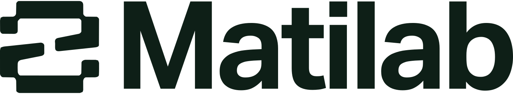
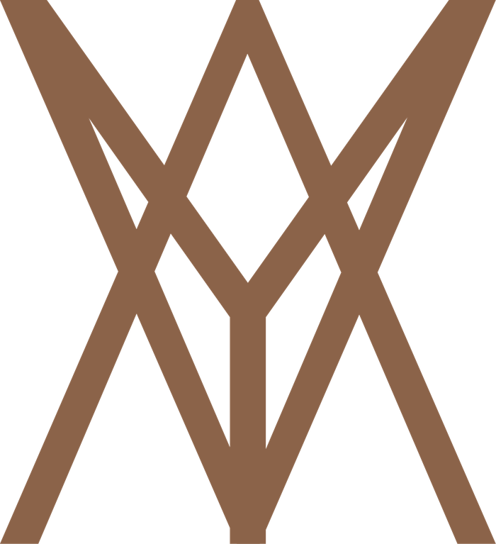
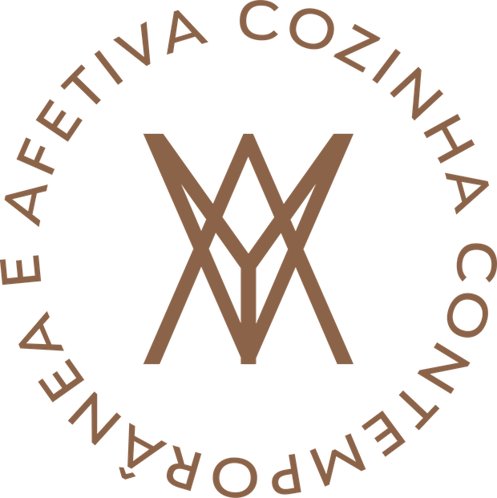

Página inicial
Abertura cinematográfica com a marca, os pratos em destaque e o caminho para a reserva já na primeira dobra.

Proposta comercial
Proposta
por
Um site que desperta o mesmo desejo que um prato bem servido.

01 · Entendimento
O Yvá não precisa de um site que apenas exista. Precisa de uma vitrine digital tão cuidada quanto a louça, o empratamento e a luz do salão. Lemos o escopo enviado e ele é claro: uma página moderna e sofisticada, fiel ao brandbook, com a fotografia dos pratos no centro da experiência e leitura impecável no celular, que é onde a decisão de reservar acontece.
Entendemos também as camadas menos visíveis do pedido. A navegação precisa conduzir o visitante até a reserva no TagMe sem atrito. O conteúdo em português e inglês precisa conversar com o hóspede do Wyndham Ibirapuera e com o público da cidade. E a equipe de marketing precisa de autonomia real para atualizar cardápio, preços, horários, fotos e textos sem depender de desenvolvedor a cada ajuste.
02 · Escopo
Cada item abaixo estava na lista enviada por vocês. Todos entram no projeto, de ponta a ponta, sem módulos cobrados à parte.
Abertura cinematográfica com a marca, os pratos em destaque e o caminho para a reserva já na primeira dobra.
O manifesto da marca traduzido para a tela: terra, origem, cozinha contemporânea e sabores afetivos.
Menu navegável por categorias, com descrições, preços e destaques do chef. Atualizável pela equipe.
Pratos e ambiente em alta qualidade, com carregamento otimizado para não pesar no celular.
Funcionamento por dia da semana, com espaço para feriados e alterações pontuais.
Endereço, referências do entorno e mapa do Google integrado, com rota em um clique.
Botão flutuante de WhatsApp e links para Instagram e demais canais, sempre ao alcance do polegar.
Integração com a plataforma já utilizada pelo restaurante, sem tirar o visitante da experiência do site.
Área editorial para menus sazonais, jantares especiais, datas comemorativas e ações com o hotel.
Site completo nos dois idiomas, com conteúdo adaptado e não apenas traduzido ao pé da letra.
Ambiente simples para a equipe editar cardápio, preços, horários, fotos e textos quando quiser.
SEO técnico, dados estruturados de restaurante e alinhamento com o perfil no Google local.
03 · Diferenciais
Vocês não precisam entregar tudo pronto. Conduzimos a construção dos textos em português e inglês a partir do brandbook, do manifesto e de uma conversa com a equipe. O tom de voz definido pela marca, emotivo e acolhedor, atravessa cada página.
Desenhamos o percurso do visitante com um objetivo claro: chegar ao TagMe. Hierarquia de informação, posicionamento dos botões, densidade de texto e ordem das seções são decididos a partir de como as pessoas realmente escolhem onde jantar.
Cardápio, preços, horários, fotos, textos e novidades ficam editáveis em um painel simples, feito para quem não é técnico. Entregamos com treinamento gravado, para que a equipe atualize o site sem abrir chamado.
Paleta, tipografia, padrão gráfico e área de não-interferência da logomarca são respeitados integralmente. O site é uma extensão natural da identidade, não uma releitura livre dela.
04 · Como trabalhamos
Reunião com a equipe de marketing para alinhar público, objetivos, referências e prioridades do Yvá e do Wyndham Ibirapuera.
Arquitetura de informação e wireframes das telas principais, já pensando na leitura mobile e no caminho até a reserva.
Redação dos textos em português, adaptação para o inglês e curadoria das fotos que entram em cada seção.
Layout completo de todas as páginas, em versão desktop e mobile, aplicando a identidade visual do brandbook.
Código sob medida, integração com o TagMe, montagem do painel administrativo e inserção de todo o conteúdo.
Rodadas de ajuste com a equipe, testes em diferentes aparelhos e navegadores e validação final antes do ar.
Configuração de domínio e hospedagem, publicação, treinamento do painel e acompanhamento nos meses seguintes.
05 · Tecnologia
Site construído com Next.js e publicado em infraestrutura de borda. Imagens servidas em formato moderno e no tamanho exato de cada tela, para que as fotos dos pratos abram rápido mesmo em 4G.
Trabalhamos com metas de Core Web Vitals, os indicadores que o Google usa para medir experiência. Site rápido não é detalhe técnico: é menos gente desistindo antes de ver o cardápio.
Estrutura semântica, dados estruturados de restaurante, versões PT e EN corretamente sinalizadas e alinhamento com o perfil do Google, para quem busca por restaurante na região do Ibirapuera.
O painel administrativo roda sobre um CMS headless. Na prática, a equipe acessa uma tela limpa, edita o que precisa e publica. Sem plugins que quebram, sem atualizações obrigatórias e sem risco de derrubar o layout por engano.

06 · Investimento e prazo
Projeto completo, à vista.
Ou 3x de R$ 4.500 sem juros.
A partir da aprovação da proposta e do recebimento das fotos em alta.
Hospedagem, manutenção e suporte.
Os três primeiros meses por nossa conta.
Proposta válida por 15 dias a partir do envio.
07 · Próximo passo
Trinta minutos são suficientes para alinhar expectativas, ajustar o escopo ao que faz mais sentido para vocês e definir a data de início. Escolha o melhor horário e nos chame.
Falar no WhatsApp